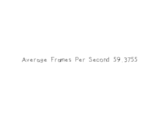

Calculating Frame Rate

Last Updated 3/16/14
Now that we know how to make a timer with SDL it's time to put it to use. We're going to use the timer to measure fps. //Main loop flag
bool quit = false;
//Event handler
SDL_Event e;
//Set text color as black
SDL_Color textColor = { 0, 0, 0, 255 };
//The frames per second timer
LTimer fpsTimer;
//In memory text stream
std::stringstream timeText;
//Start counting frames per second
int countedFrames = 0;
fpsTimer.start();
In order to calculate the frames per second, we need to keep track of the number of frames rendered and the number of second passed. Before we enter the main loop, we start a timer
used to calculate fps and declare a variable to keep track of the number of frames rendered.
//Calculate and correct fps
float avgFPS = countedFrames / ( fpsTimer.getTicks() / 1000.f );
if( avgFPS > 2000000 )
{
avgFPS = 0;
}
To calculate frames per second, you just take the number of rendered frames and divide it by the seconds passed. Now it is possible for there to be a very small amount of time
passed for the first frame and have it give us a really high fps. This is why we correct the value if it is really high.
//Set text to be rendered
timeText.str( "" );
timeText << "Average Frames Per Second " << avgFPS;
//Render text
if( !gFPSTextTexture.loadFromRenderedText( timeText.str().c_str(), textColor ) )
{
printf( "Unable to render FPS texture!\n" );
}
//Clear screen
SDL_SetRenderDrawColor( gRenderer, 0xFF, 0xFF, 0xFF, 0xFF );
SDL_RenderClear( gRenderer );
//Render textures
gFPSTextTexture.render( ( SCREEN_WIDTH - gFPSTextTexture.getWidth() ) / 2, ( SCREEN_HEIGHT - gFPSTextTexture.getHeight() ) / 2 );
//Update screen
SDL_RenderPresent( gRenderer );
++countedFrames;
After calculating the fps, we render the value as a texture to the screen. After we're done rendering the scene, we increment the frame counter.
Since this program is vsynced, it is probably going to report 60 fps. If you want to find out how much you hardware can do, just create a renderer without vsync.
Since this program is vsynced, it is probably going to report 60 fps. If you want to find out how much you hardware can do, just create a renderer without vsync.